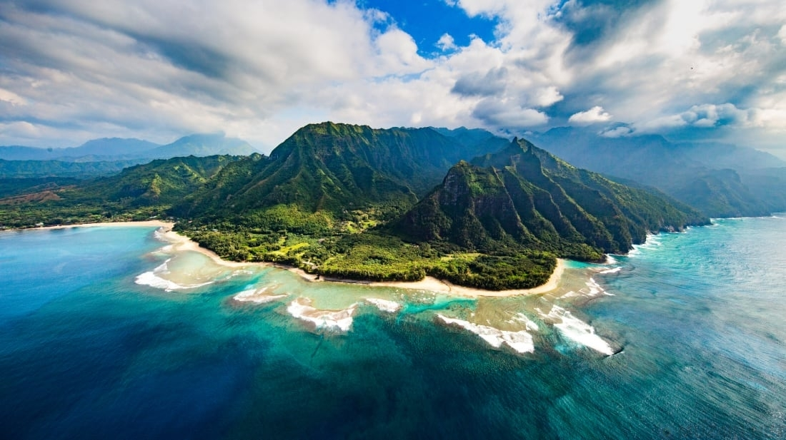
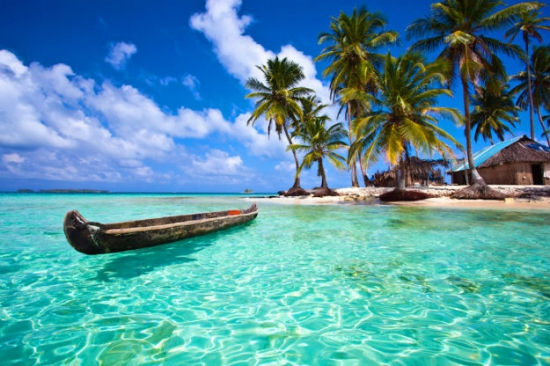

Стоимость аренды на островах значительно выше, чем на континентальной части США. В зависимости от района, квартира-студия на Оаху может обходиться вам в 700 - 1 200$ в месяц, стоимость аренды двухкомнатной квартиры или дома начинается от 1500$ в месяц. Самый дорогой район на Оаху - Вайкики, где однокомнатная квартира будет обходиться вам от 1 600$ ежемесячно. И имейте в виду, что аренда постоянно повышается.
На какой остров мне лучше переехать?
На этот вопрос вам следует искать ответ самим, мы можем помочь вам только полезной информацией и
советами. Во-первых, желательно (если вы можете себе это позволить), чтобы вы сначала просто приехали
отдыхать на Гавайи. После самостоятельного исследования острова вам будет намного
легче решить,
где вам
приятнее и комфортнее находиться. Жизнь на всех островах идет по-разному, так же как различаются и цены,
зарплаты и наличие работы.
Если вы решили поселиться на Оаху, то вам следует помнить, что
это самый
населенный остров. Мы рекомендуем вам заранее позаботиться о месте проживания, чтобы этот вопрос уже вас не
беспокоил, когда вы приедете, и вы бы с самого начала смогли спокойно исследовать окрестности. Лучшее время
для переезда - с января по май и с сентября по ноябрь. В эти месяцы на острове меньше туристов, а,
следовательно, вам будет легче забронировать билет на самолет, взять машину на прокат и найти жилье на
первое время. На Мауи, Кауаи и Большом острове проживает меньше людей, и жизнь здесь может показаться раем
для тех, кто не любит большие мегаполисы.
Что взять с собой?
Личные вещи: мы вам рекомендуем взять с собой как можно меньше личных вещей. На
Гавайях можно
найти квартиры со всеми необходимыми удобствами: то есть, вам не нужно брать с собой кухонную утварь,
столовые приборы, мебель и тому подобное. Возьмите только дорогие вам вещи и одежду. Вам понадобится
футболка, шорты, легкий пиджак и джинсы. Если вам понадобится еще одежды, то на островах вы всегда сможете
купить ее по доступной цене.
Растения на Гавайи можно перевезти только после осмотра. Если вы хотите
взять с собой растения, то свяжитесь с Министерством сельского хозяйства США по адресу: Animal and Plant
Health Insurance Service, Terminal Box 57, Honolulu International Airport, Honolulu, Hawaii 96819, и
получите более точную информацию по этому вопросу.
На Гавайях существуют очень строгие ограничения на
ввоз домашних животных. Если вы хотите взять своего питомца с собой, то не позднее чем за 4 месяца до
предполагаемой даты переезда свяжитесь с отделом Animal Guarantee Section, который предоставит вам
необходимую информацию и инструкции. Вы можете узнать об этом больше по адресу: Ссылка
Жильё
Еда
Несмотря на тот факт, что 90% всех продовольственных товаров привозятся на Гавайи, вы можете найти продукты по довольно доступным ценам в магазинах сети «Costco», «Wal Mart» и «Sam's Club». В некоторых супермаркетах вы также можете наткнуться на товары по сниженным ценам. Хорошим решением на Гавайях будет покупать именно те продукты, которые продаются по сниженным ценам, а не те, которым вы чаще всего отдаете предпочтение. Если вы предпочитаете питаться в кафе, то это вам может обойтись недешево: завтрак 4-7$, обед 5-10$ и ужин 12-30$.
Район Вайкики
Район Вайкики достаточно известен среди туристов, и большинство зданий в этом районе - гостиницы. Расположение достаточно удобное: недалеко от Вайкики расположен собственно пляж Вайкики и гора Даймонд Хэд, а если вы к тому же любите тусоваться - Вайкики определенно вам понравится. В районе Вайкики есть все: ночные клубы, рестораны, выставки, бары и еще много чего. Единственным недостатком является отсутствие продовольственных магазинов: здесь есть всего один, который к тому же очень дорогой. Еще вы можете найти продукты в магазинах сети «ABC», но здесь цены не ниже. Зато эти магазины очень легко найти, поскольку в районе их несколько.
Транспорт
Оаху является единственным островом, где вообще есть общественный транспорт. Автобус - довольно удобный и доступный способ объехать остров вокруг. Также есть маршруты, которые едут до любой части острова Оаху. Для дальнейшей информации о стоимость билетов, расписаний и маршрутов посетите сайт ссылка.
